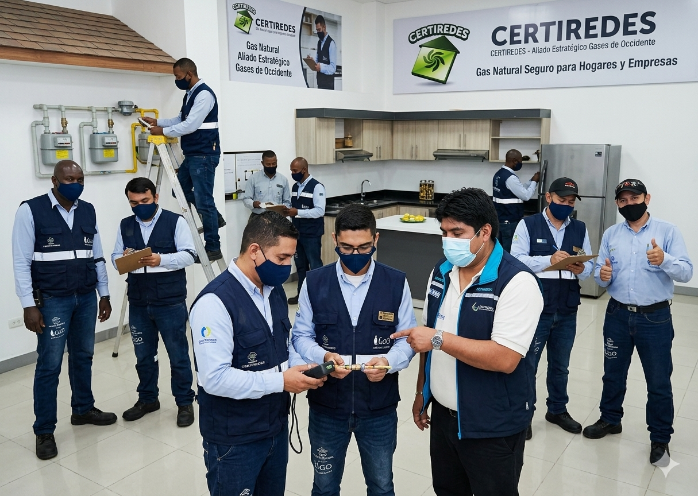
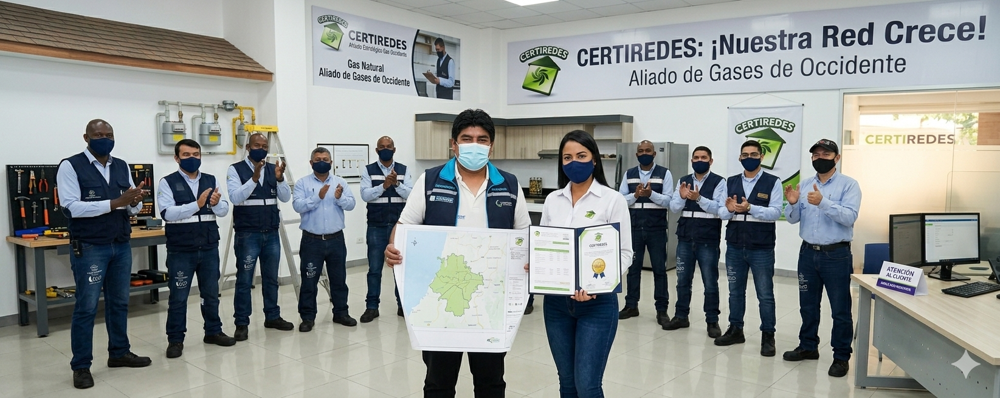
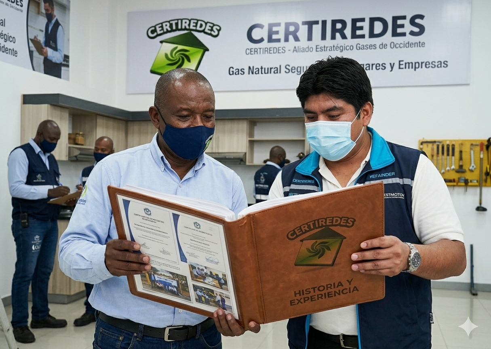

Revisión periódica
Servicio de revisión obligatoria para garantizar el correcto funcionamiento de las instalaciones de gas.

Inspección, mantenimiento y certificación residencial y comercial con el respaldo y la experiencia que necesitas.
Te brindamos asesoría continua y soluciones al alcance de un clic para que tengas la mejor experiencia, de forma ágil y oportuna. Te invitamos a ser parte de nosotros y confiar en nuestros servicios diseñados para ti.


Servicio de revisión obligatoria para garantizar el correcto funcionamiento de las instalaciones de gas.
Este servicio se realiza en instalaciones de gas que han sido construidas o modificadas recientemente.
Aplica a instalaciones que no cuentan con un contrato activo con una empresa distribuidora de gas.
Este servicio está dirigido a instalaciones que ya han superado el tiempo establecido para su revisión obligatoria.



El certificado de gas es un documento obligatorio que garantiza que las instalaciones cumplen con las normas de seguridad exigidas por la ley. Este certificado es necesario para la conexión, reconexión o continuidad del servicio de gas natural.
Nuestro equipo realiza inspecciones técnicas detalladas para verificar el estado de las redes internas, asegurando que no existan fugas ni riesgos para los usuarios.
Al finalizar el proceso, se emite el certificado correspondiente, brindando tranquilidad y cumplimiento normativo.

Somos una empresa especializada en la inspección y certificación de instalaciones de gas natural, comprometida con la seguridad, calidad y cumplimiento de la normativa vigente.
Contamos con personal calificado y experiencia en el sector, lo que nos permite ofrecer un servicio confiable, ágil y seguro a nuestros clientes.
Trabajamos con responsabilidad y transparencia, brindando soluciones que garantizan el correcto funcionamiento de las redes de gas en hogares y empresas.

A través de nuestro portal Certiredes, los usuarios pueden gestionar de manera rápida y sencilla sus solicitudes de inspección y certificación.
Nuestro portal está diseñado para brindar comodidad, transparencia y acceso fácil a toda la información relacionada con su servicio.

Te invitamos a acceder a nuestra plataforma en línea para agendar tus citas de inspección, consultar el estado de tus certificados o ingresar como aspirante.
Por medio de nuestro WhatsApp institucional y nuestros canales de atención, puedes resolver todas tus dudas de forma rápida y sencilla.
Diseñado especialmente para brindarte el mejor servicio. ¡Haz parte de nosotros!